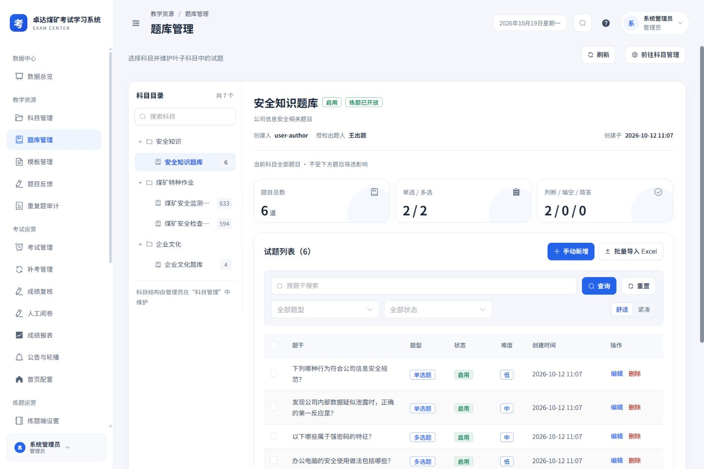

2026-10-20 · 规范版本 workbuddy-01 · 本地代码实施
全部页面，按同一套规范落地
最新一轮：练题首页、错题与成就验收（目录真实范围、独立恢复、手机全屏成就、错题名称与分页恢复）。
历史一轮：消息与学习中心验收（手机完整列表、真实统计范围、独立重试、部分成功与统一空状态）。
历史一轮：考试与练题答题验收（完整考试信息、真实交卷进度、失败答案保留、纠错草稿、答题卡及手机布局）。
历史一轮：科目与题库验收（手机目录、完整名称、科目编辑、复制与批量难度、提交锁定及失败恢复）。
历史一轮：补考、成绩与收藏验收（手机申请、完整复核说明、收藏筛选及失败恢复）。
历史一轮：系统与练题设置验收（手机题库卡片、44 px数字操作、保存锁定、真实范围与失败恢复）。
历史一轮：考试管理、成绩报表与菜单权限验收（完整详情、卡片名单、真实范围、手机例外权限与失败恢复）。
历史一轮：内容运营、练题监控与个人资料验收（手机编辑、完整作答、上传锁定与失败恢复）。
上一轮：题目反馈、重复题与补考验收（完整详情、手机对照、固定处理入口与失败恢复）。
上一轮：系统维护验收（生效策略、手机表单、归档确认与失败恢复）。
上一轮：科室与安全日志验收（长名称、手机双日历、真实统计和导出字段）。
白侧栏、浅灰蓝底、蓝色操作、16 px 圆角卡片。页面、编辑抽屉、任务弹窗和手机端共同遵守已确认的 Workbuddy 方案。
历史一轮：人员与权限验收（完整成员清单、菜单分组、用户岗位和授权预演）。
上一轮：考试编辑与预览验收（两步配置、分组抽题、日期弹层与保存锁定）。
上一轮：五种题型编辑验收（长选项、评分档位、手机与横屏表单）。
上一轮：阅卷、复核与监考验收（长评分细则、手机输入与操作锁定）。
上一轮：导入导出任务验收（文件卡片、校验预览、手机选择与固定操作）。
上一轮：消息、错题与个人统计验收（真实范围、手机列表与阅读流程）。
上一轮：考生与练题交互验收（手机答题、练习设置、长内容弹窗）。
本页记录全覆盖实施阶段。后续交互与横屏问题已继续修正，最新结果为60个测试文件、450项测试通过，详见交互与布局精修验收。
46页面 / 路由视图设计
41声明式弹窗 / 抽屉节点
168实际页面视口检查
444完整测试通过
实施内容与对应关系
所有实际页面均登记在设计目录，并采用对应的页面模板。44 个独立页面组件覆盖管理、出题、考生、练题及公共页面；重复路由和嵌套题库工作区单独登记。另有 17 个含弹窗的组件或框架条目。
| 区域 | 已实施的规范 | 保留的行为 |
|---|
| 全局框架 | 232 px 白侧栏、分组菜单、94 px 桌面页头、面包屑与当前标题 | 菜单权限、账号安全、搜索、折叠菜单与消息 |
| 管理列表与工作区 | 筛选、真实统计范围、表格层级、分页、空 / 错误状态 | 科室隔离、题库授权、题型、批量操作与考务能力 |
| 编辑与配置 | 普通编辑统一侧抽屉；复杂表单 720 px；设置页底部保存栏 | 原字段、必填校验、提交保护、锁定规则、失败恢复 |
| 手机管理端 | 全屏编辑抽屉、正文内部滚动、固定操作区、表格局部横滚 | 不以隐藏业务字段或删除操作换取适配 |
| 考生与练题 | 统一卡片和按钮、五项底部导航、专注答题、44 px 触控 | 自动暂存、五种题型、答题卡、判分、复核与安全限制 |
导入、导出、复制、批量授权、特殊考务和安全验证按规范作为独立任务弹窗，保留步骤及校验。历史 ui-v3、ui-v3b、ui-redesign 文档保留作记录；当前实施依据为 ui-workbuddy/specification.json。
实际页面截图
以下截图来自本地运行的实际应用。业务内容和数量来自当前账号接口，未用设计示例替换。

题库工作区：目录、对象上下文、真实题型统计、筛选与列表。
答题流程与弹窗验收
以下样例使用实际页面组件与隔离的内存数据，不连接业务接口。用于核对布局与流程，未开启正式考试、提交成绩、创建练题会话或修改用户权限。
已核对考试五种题型与长文本、成绩明细、人工阅卷，以及练题单选 / 多选 / 判断、即时判分、解析、答题卡跳题、取消退出和完成小结。
检查范围和结果
| 检查 | 范围 | 结果 |
|---|
| 类型与生产构建 | vue-tsc --noEmit / vite build | 通过 |
| 完整回归测试 | 59 个文件，444 项测试 | 通过 |
| 最后改动定向复查 | 设计覆盖、练题作答、成绩明细，21 项 | 通过 |
| 实际页面视口 | 42 个实际路径 × 320 / 390 / 768 / 1440 px | 168 次，无页面横向溢出 |
| 编辑抽屉 | 5 种题型 + 科室、用户、科目、角色、岗位、模板、公告、轮播 | 52 次，无正文横向溢出；手机底部按钮 44 px |
| 隔离答题与详情 | 考试、成绩、阅卷 12 次；练题反馈 / 小结 8 次 | 20 次，无页面横向溢出 |
| 设计画板 | 63 个条目 × 桌面 / 手机 | 126 次结构检查通过 |
视口检查为浏览器实际渲染尺寸和页面溢出检查，结合代表页面目视复核；不等同于逐像素图像比对。设计中的加载、空、失败、无权限状态为规范演示；真实业务状态另由页面和功能测试验证。未为了产生验收数据而变更现有权限、考试、配置或题库内容。
逐页检查清单
按实际路径汇总，详情可见上方 JSON。